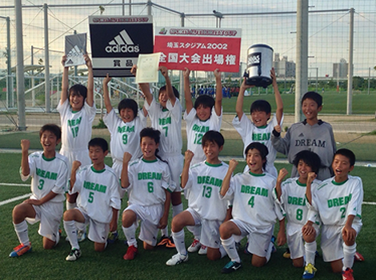

クラブ紹介
DREAMは、試合の中で真剣に遊べる選手を目指してテクニックのマスターを最優先に考える個人育成主義のチームです。
選手たちが次のカテゴリーで大活躍するためにも、慌てずに焦らずにじっくりと個人を育てたいと思っています。
>>クラブ紹介
TOPICS
★JA全農杯チビリンピック！
★長岡京SS招待3年生大会！ 優勝！！
★H29年度 第23回 本陣カップ 優勝！！
★琵琶湖カップ！ 準優勝！！
★チビリンピック2015 小学生8人制サッカー全国決勝大会出場！！
★第21回大阪小学生サッカー大会（U-11）2015フジパンCUP
2位トーナメント
★第7回卒業記念サッカー大会 MUFGカップ(大阪大会)（U-12）
中央大会 大阪3位
★JA全農杯チビリンピック2015小学生８人制関西大会（U-10）
関西大会優勝！！ 全国大会出場決定！！
★JA全農杯チビリンピック2015小学生８人制サッカー大会（U-10）
大阪府大会優勝！！ 2連覇達成！！ 2年連続関西大会出場決定！！
★第21回大阪小学生サッカー大会（U-11）
⇒結果 大阪第3位 フジパンカップ関西大会出場決定しました！！
★第7回卒業記念サッカー大会 MUFGカップ(大阪大会)（U-12）
中央大会出場決定
★第21回大阪小学生サッカー大会（U-11）
４種リーグの結果より中央大会出場が決定しました→1/31～J-GREEN堺にて⇒結果 大阪第3位 フジパンカップ関西大会出場決定しました！！
★JA全農杯チビリンピック小学生８人制サッカー大会（U-10）
中央大会出場決定
★2015年度U-13フューチャーリーグ
★バーモントカップ 第24回 全日本少年フットサル大会 大阪大会優勝！！
全国大会出場が決定しました！！
→2015年1月4日～6日東京駒沢体育館
★スポーツオーソリティカップ2014(U-12) 近畿大会2連覇！！
2年連続全国大会出場が決定しました！！
→11月29日(土)埼玉スタジアム2002にて

★ライフカップ第38回大阪少年サッカー選手権大会（U-12）
４種リーグの結果より中央大会出場が決定しました→11/8 J-GREEN堺にて
★第21回大阪小学生サッカー大会（U-11）
４種リーグの結果より中央大会出場が決定しました→1/31～ J-GREEN堺にて
◆2014ナショナルトレセン(U-12)にDREAMから1名選出されました。
◆2014大阪府トレセン(女子U-12)にDREAMから1名選出されました。
◆2014大阪府トレセン(U-12)にDREAMから1名選出されました。
◆2014大阪府トレセン(U-11)にDREAMから1名選出されました。
◆2014ナショナルトレセン(U-14)中日本にOBの李理永君(セレッソ西所属)が選出されました。
★JA全農杯チビリンピック2014小学生８人制サッカー関西大会（U-10）第3位
★JA全農杯チビリンピック2014小学生８人制サッカー大阪府大会（U-10）優勝しました！！
◆ナショナルトレセン(U-12)にDREAMから2名選出されました。
★スポーツオーソリティカップ2013(U-12) 全国大会 第3位
★第19回全日本ユース(U-15)フットサル関西大会 準優勝
★バーモントカップ第23回全日本少年フットサル大阪大会 準優勝
◆大阪府セントラルトレセン(U-11)にDREAMからGKが1名選出されました。
★スポーツオーソリティカップ2013(U-12) 近畿大会 優勝
全国大会出場が決定しました→11月30日(土)埼玉スタジアム2002にて
★第１９回全日本ユース（U-15）フットサル大阪大会 優勝
関西大会出場が決定しました→11月10日(日)和歌山ビッグウェーブにて
★MUFGカップ（U-12）
４種リーグの結果より中央大会出場が決定しました→３月J-GREEN堺にて
★第20回大阪小学生サッカー大会（U-11）
４種リーグの結果より中央大会出場が決定しました→２月J-GREEN堺にて
◆大阪府セントラルトレセン(U-11)にDREAMから2名選出されました。
◆大阪府セントラルトレセン(U-12)にDREAMから3名選出されました。
★第6回卒業記念サッカー大会 MUFGカップ(大阪大会)（U-12）
予選リーグ優勝→結果：大阪ベスト8
★JA全農杯チビリンピック小学生８人制サッカー大会（U-10）
中央大会決定しました →結果：大阪第3位
★第19回大阪小学生サッカー大会（U-11）
４種リーグの結果より中央大会出場が決定しました→結果：大阪BEST16
中学1年生～3年生が活動しています。>>DREAM U-15のHP
トレセン在籍情報

豊能トレセン 13名
大阪府トレセン 1名

豊能トレセン 15名
DREAMの代表選手として活躍中。
過去の情報
スタッフ情報
DREAM OBの皆様！
スタッフ募集！！
審判・指導・引率等
詳細についてはご連絡下さい。